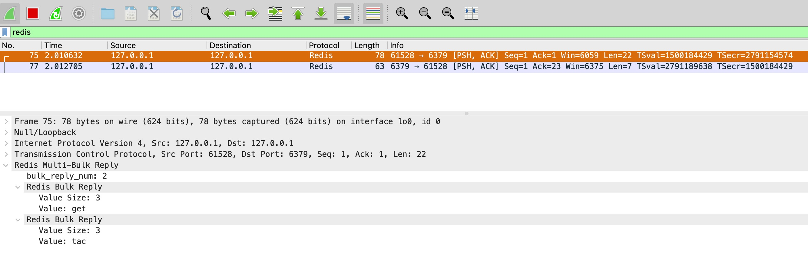

Redis 有自己的一套传输协议（RESP），因此想通过 Wireshark 抓包 Redis 得先安装插件，具体步骤如下：
- 找到你的 Wireshark 安装目录下的
init.lua所在的文件夹
例如我的是 MacOS，通过 DMG 安装的，是在 /Applications/Wireshark.app/Contents/Resources/share/wireshark 目录下
把 redis-wireshark.conf 整个文件 copy 放在上述目录下
编辑
init.lua添加以下内容，加载第 2 步放进去的 lua 脚本
-- 其它内容...
if not running_superuser or run_user_scripts_when_superuser then
dofile(DATA_DIR.."console.lua")
dofile(DATA_DIR.."redis-wireshark.lua") -- 这行是你要新加的，其它都是原有的
end
-- 其它内容...
重启 Wireshark 或使用 UI 上的
Analyse -> Reload Lua Plugins功能（CMD + SHIFT + L）重新加载插件启动抓包，用
redis-cli连接你的 Redis，随便输入一些命令（我这里示例是get tac），在 Wireshark filter 框框中输入redis过滤协议，看到以下数据说明成功了
